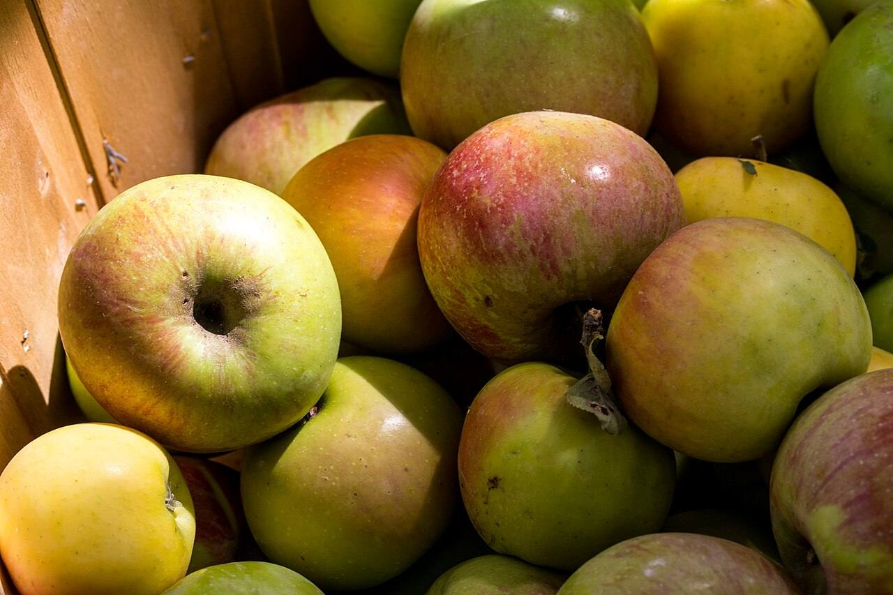

Six acres of apples, yours to pick.
A Herefordshire cider orchard with 22 varieties, open September to October.

-
1. Open September to October.

- Picking days and hours
- To be announced
- Where
- Herefordshire, address to be announced
-
2. Pick from 22 varieties.
Walk the rows and pick what’s ripe.

-
Plan a visit
3. Take one of three ciders home.
Names and prices: to be announced